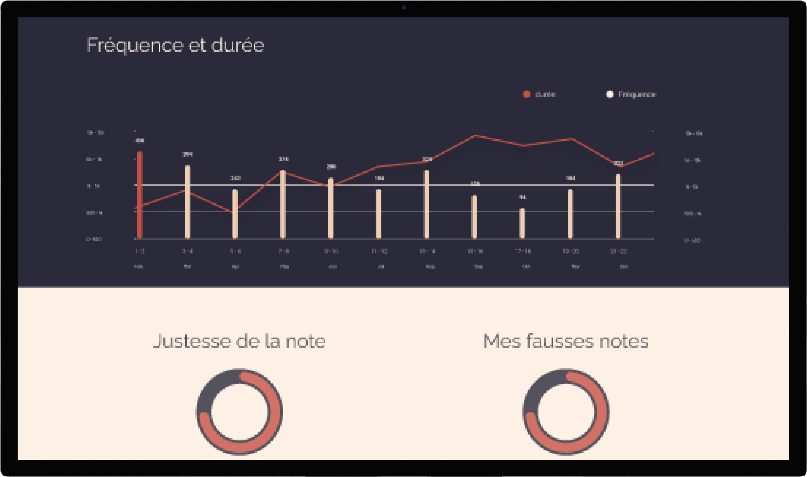

Performer avec iCord
Ed Sheeran a choisi de jouer avec la guitare connectée iCord en raison de sa combinaison unique d'innovation technologique et de sonorité exceptionnelle. En tant que musicien talentueux, Ed est constamment à la recherche de nouveaux moyens d'exprimer sa créativité musicale et de se connecter avec son public de manière plus immersive. En performant avec l'iCord lors du lancement de cette nouvelle guitare, Ed montre son engagement en faveur de l'innovation musicale et sa passion pour l'expression créative.
Précommander iCordMatériaux Durables
Coffre en Palissandre
Ce bois exotique est reconnu pour sa durabilité et sa beauté, et est souvent utilisé dans la fabrication de guitares de haute qualité.
Cordes en aluminium recyclé
Elles assurent confort de jeu et son de haute qualité.
CT-3N
Préampli CT-3N qui embarque un EQ 3-bandes, un filtre Notch, un accordeur et un potentiomètre de volume.
Un design unique
En plus de son design pratique, l'iCord est également un choix esthétique attrayant, avec des finitions soignées et une forme ergonomique qui assure un confort optimal lors de la pratique de la guitare. En somme, le design unique de l'iCord offre aux utilisateurs une combinaison rare de praticité, de performance musicale et de style élégant.
Précommander iCordQualité sonore
Captation claire et précise du son acoustique
Les micros de l'iCord sont conçus pour capturer le son acoustique de la guitare de manière claire et précise, ce qui assure un son de qualité supérieure lorsque la guitare est utilisée de manière amplifiée.
Contrôle optimal du bruit de fond
Les micros de l'iCord sont conçus pour minimiser les bruits de fond, ce qui garantit une qualité sonore constante même dans des environnements bruyants.
Réduction du feed back
Les micros de l'iCord sont conçus pour minimiser les réactions acoustiques négatives telles que le feed back, ce qui garantit une utilisation fluide et confortable.
Amplification naturelle du son acoustique
Les micros de l'iCord peuvent ajouter une dimension supplémentaire au son acoustique de la guitare, en renforçant les nuances et les textures du son.
Analyse de vos sessions
 Précommander iCordTentez de remporter votre iCord
En plus d’assister au concert exclusif d’Ed sheeran, un membre du public se verra tiré au sort pour remporter son iCord qu’il avait précommandé.
Précommander iCord